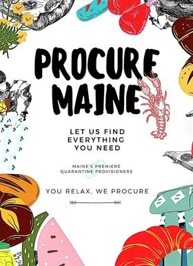

Procure Maine
Two friends and I started a delivery company for visitors stuck in Maine’s Covid quarantine. Then the quarantine ended.
The idea

We had the idea at the beginning of Covid. We realized that as summer approached, millions would come to Vacationland from New York, Massachusetts and around the country, and be stuck in a mandatory two-week quarantine.
Two friends and I launched Procure Maine, a concierge and delivery company, in May 2020.
Finding customers
We started by word of mouth: talking to everyone we knew, putting up flyers, making Facebook ads, whatever we could think of.
We pitched 27 clients, most of them businesses, and closed 18. That’s two out of three.
Local partners
As we got our first customers, we began to build our network of local partners, from oyster farms and bakeries to seafood distributors and bike shops. We gave them business, and in return received a discount on what we bought. That improved the value we could provide to our customers while maintaining our margins.
The Sunday Boston Globe ran a story on us, and we were on Channel 8 News and 99.9 The Wolf radio.
After the mandate
Eventually, the quarantine mandate was lifted and we needed to pivot. Our main customer base had been undercut. But retirees in independent living wanted both safety and convenience, whether or not the law required it.
Piper Shores, a retirement community in Maine, listed us as the official delivery service for all of its residents.
Eventually the business wound down. We went off to college, and life gradually returned to normal.